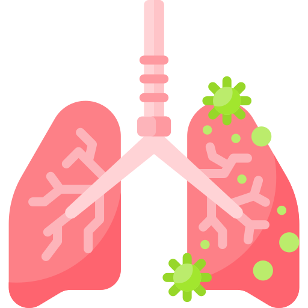

 肺炎
成因
肺炎是指肺臟實質組織的一部份或全部有發炎的現象，產生分泌物，可能同時包括氣管和肺泡發炎，使得肺部組織彈性降低、呼吸道阻力增加，它是種下呼吸道的感染，在任何季節都可能發生，但是在冬季和春季最常發生，且是全世界兒童最大的唯一傳染性死亡原因，而兒童生理功能發育尚未成熟，耳咽管較短及平，且呼吸道的保護作用降低而產生肺炎這類疾病。
症狀
上呼吸道感染症狀，出現發燒、咳嗽有痰、疲倦、不安、昏睡、食慾不振、嘔吐，軟弱無力，甚至有胸痛、呼吸急促、呼吸困難和低血氧症狀。
治療
給予退燒劑，如為細菌性肺炎，使用口服或靜脈注射抗生素。維持呼吸道通暢、促進肺部擴張及促進氧合，避免呼吸費力，且提供高濕度空氣，視情況給予氧氣；鼓勵增加水分攝取，給予點滴注射，促進痰液稀釋；教導深呼吸咳嗽技巧，預防痰液積留；視情況抽痰，並持續觀察呼吸速度與型態，聽診肺部呼吸音，早期發現呼吸困難徵象；執行胸腔物理治療，包括：姿位引流、胸部叩擊和震顫。
預防
給孩子必需和足夠的營養，小孩四個月之後可以添加一些副食品，還要適時的讓孩子去戶外活動，多曬太陽，室內空氣要新鮮、流通。傳染病流行季節不帶孩子到公共場所去，不要讓孩子接觸已感染的兒童和成人，天氣變化時要爲孩子適時增減衣服，還有須積極預防貧血、營養不良、微量元素缺乏等病症。麻疹、百日咳、流感等傳染病都可使小兒機體抵抗力降低而引起肺炎，所以建議施打疫苗以預防疾病。
影片介紹
參考資料
兒童醫院(2024年1月2日)．小兒肺炎。 https://www.cmuh.cmu.edu.tw/HealthEdus/Detail?no=5301
楊宜靜、吳麗敏（2021）．運用治療性遊戲提昇肺炎學齡前期兒童復原力之照護經驗。長庚護理，32(3)，95-105。https://doi-org.autorpa.ntunhs.edu.tw:8443/10.6386/CGN.202109_32(3).0008
劉怡君、林秀玟（2020）．運用治療性遊戲於一位學齡前期肺炎兒童之護理經驗。彰化護理，27(4)，60-72。https://doi-org.autorpa.ntunhs.edu.tw:8443/10.6647/CN.202012_27(4).0008